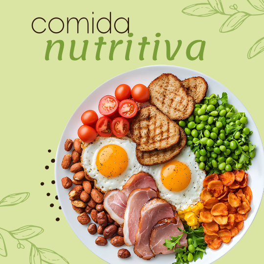
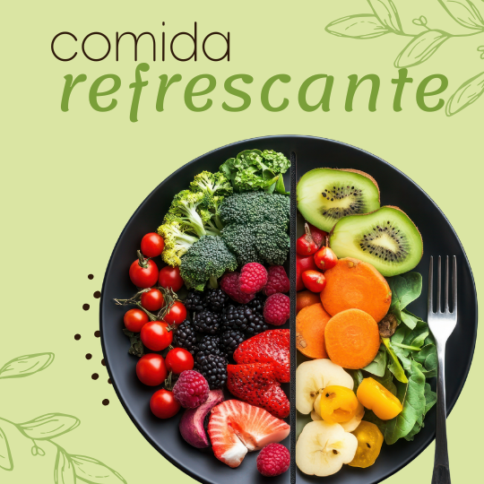
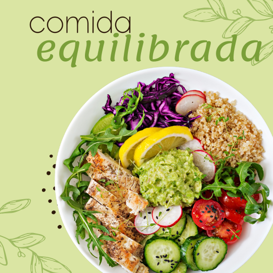

PRATOS PARA SE INSPIRAR


RECEITAS DA SEMANA
Lasanha de Abobrinha
Ingredientes
- 3 abobrinhas médias em fatias finas
- 400g de frango desfiado
- 200g de ricota amassada
- 1/2 xícara de molho de tomate
- 1 cebola e 1 dente de alho picados
- Azeite, sal, pimenta e ervas a gosto
- Queijo ralado (opcional)
Modo de preparo
- Grelhe levemente as fatias de abobrinha com um fio de azeite.
- Refogue cebola e alho, junte o frango e tempere. Misture a ricota.
- Monte camadas: molho, abobrinha, recheio; repita e finalize com queijo.
- Leve ao forno 180 °C por ~25 minutos ou até dourar.
🍃 Dica: Sirva com salada verde e um fio de azeite.
Bolo de Banana Fit
Ingredientes
- 3 bananas maduras amassadas
- 2 ovos
- 1 xícara de aveia em flocos
- 1/4 xícara de óleo de coco
- 1 colher (chá) de fermento
- Canela a gosto
- Nozes ou gotas de chocolate (opcional)
Modo de preparo
- Misture bananas, ovos, mel/adoçante e óleo.
- Adicione a aveia e canela; por último incorpore o fermento.
- Asse em forma untada a 180 °C por 30–35 minutos.
🍌 Dica: Sirva morno com pasta de amendoim.